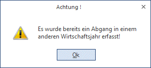
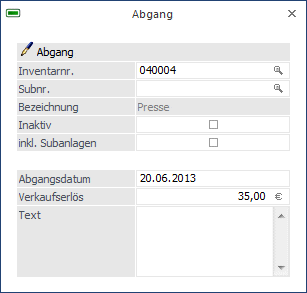

Um einen Abgang eines Anlagegutes zu berücksichtigen, wählen Sie den Menüpunkt
1 Buchen
1 Abgang
Hier können Abgänge ordnungsgemäß erfasst werden. Dieser Programmpunkt kann auch mit der Tastenkombination
1 STRG + B
aufgerufen werden.
Von einem Abgang eines Anlagegutes spricht man, wenn ein Anlagegut aus dem Unternehmen ausscheidet. Dabei müssen folgende Abläufe berücksichtigt werden:
ü Das Anlagegut muss bis zum Zeitpunkt des Ausscheidens abgeschrieben werden (wenn die Anlage z.B. im November ausscheidet, wird noch das ganze Jahr abgeschrieben).
ü Das Anlagegut muss vom Anlagenkonto abgebucht werden.
ü Ein eventueller Verkaufserlös muss buchungstechnisch berücksichtigt werden (USt-pflichtig).
ü Eventuelles Übertragen einer stillen Rücklage.
Hinweis 1
Wird für die Anlage die Abgangsregel "monatsgenau" verwendet, wird auch der Abgangsmonat für die Berechnung der Abgangs-AfA berücksichtigt.
Beispiel
Eine Anlage scheidet am 20.11.2013 aus - der November wird in der Abgangs-AfA berücksichtigt; der Dezember wird als Abgangsbuchwert ausgewiesen.
Es sind folgende Arten des Ausscheidens (bzw. des Abganges) denkbar:
ü Ausscheiden gegen Entgelt (Verkauf oder Tausch des Anlagegutes)
ü Ausscheiden ohne Entgelt (Schadensfall, Beendigung der Abschreibungs- oder Nutzungsdauer)
Hinweis 2
Wenn bereits in einem anderen Jahr ein Abgang für das ausgewählte Anlagegut eingetragen wurde, kommt eine entsprechende Fehlermeldung. Abgänge können nur im aktuellen Wirtschaftsjahr editiert werden.


Ø Inventarnr.
Eingabe der Inventarnummer, lt. Anlage im Menüpunkt Anlagenstamm. Die Matchcode-Funktion erleichtert Ihnen die Suche.
Soll eine Subanlage als Abgang gebucht werden, wenn die Hauptanlage bereits in Vorjahren abgegangen ist, muss die Subanlage über den Matchcode ausgewählt werden.
Ø Subnr.
Eingabe der Subnummer, lt. Anlage im Menüpunkt Anlagenstamm; auch hier steht Ihnen die Matchcode-Funktion zur Verfügung.
Ø Inaktiv
Wird die Checkbox aktiviert, dann wird das Anlagegut nach dem Abgang automatisch im Anlagenstamm auf inaktiv gesetzt. Inaktive Anlagegüter können über das Programm Reorganisieren gelöscht werden, wenn sie keinerlei Bewegungen aufweisen und im vorangegangenen Wirtschaftsjahr abgegangen sind.
Inaktive Anlagegüter werden im Anlagen-Matchcode nicht mehr mit angezeigt.
Ø inkl. Subanlagen
Die Checkbox "inkl. Subanlagen" kann bei Hauptanlagen, für die auch Subanlagen existieren, aktiviert werden. Dies bewirkt, dass alle Subanlagen ebenfalls abgehen. Der eingetragene Verkaufserlös wird dabei auf alle Anlagen auf Basis des Anschaffungswertes gleichmäßig aufgeteilt.
Ø Abgangsdatum
Eingabe des Abgangsdatums.
Achtung
Wenn bei einem Abgang der Erste des Monats als Abgangsdatum eingegeben wird, wird die Abgangs-AfA nur bis zum Vormonat gerechnet.
Ø Verkaufserlös
Eingabe des Verkaufserlöses bzw. Schadenersatzansprüche bei der Versicherung.
Anhand des Verkaufserlöses und des Abgangsbuchwertes wird der Gewinn bzw. Verlust ermittelt, welcher auf der Liste der Abgänge ausgewiesen wird.
Ø Text
Hier kann ein 255stelliger Buchungstext eingegeben werden. Dieser Text wird in den Auswertungen Historien-Journal und Anlagestammblatt angedruckt.
Bei den Auswertungen im Menüpunkt
1 Auswertungen
1 Ab-/Zugänge
ist der Abgang des Anlagegutes ersichtlich.
Stornierung eines Abganges
Ein Anlagenabgang kann - solange der Abschreibungslauf noch nicht durchgeführt wurde - im Menü "Anlagenstamm", Register "Entwicklung", über den Button "Entfernen" storniert werden.
Hinweis
Bei einem Abgang wird geprüft, ob es an einem jüngeren Datum bereits eine Umbuchung gibt und eine Meldung ausgegeben. Die Umbuchung muss dann erst gelöscht werden, bevor der Abgang gebucht werden kann.